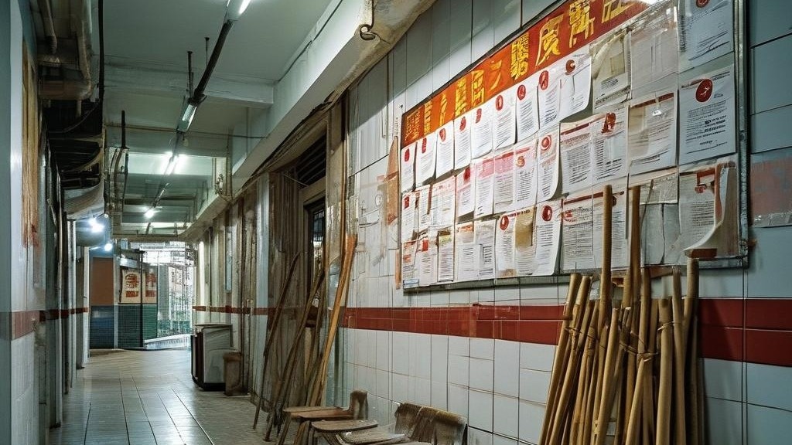
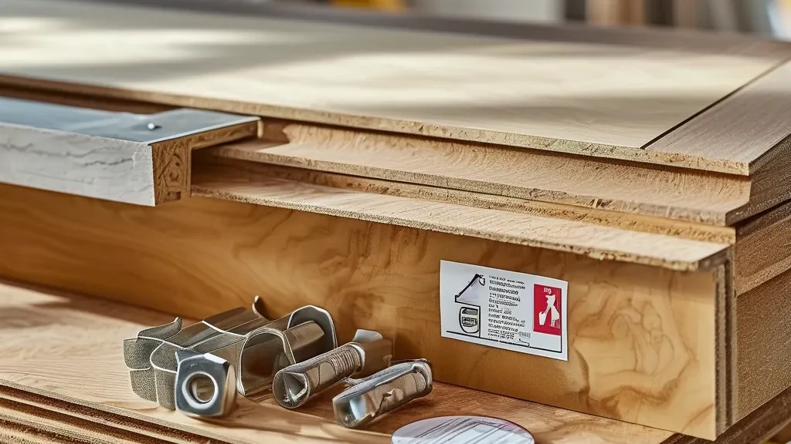
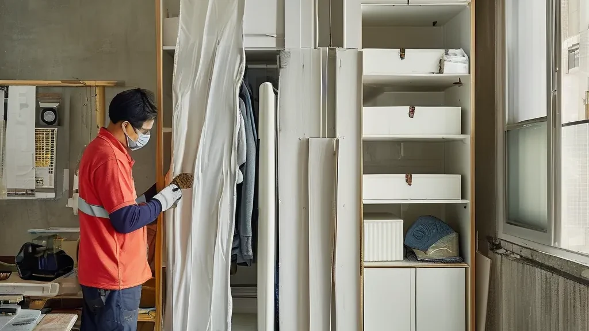
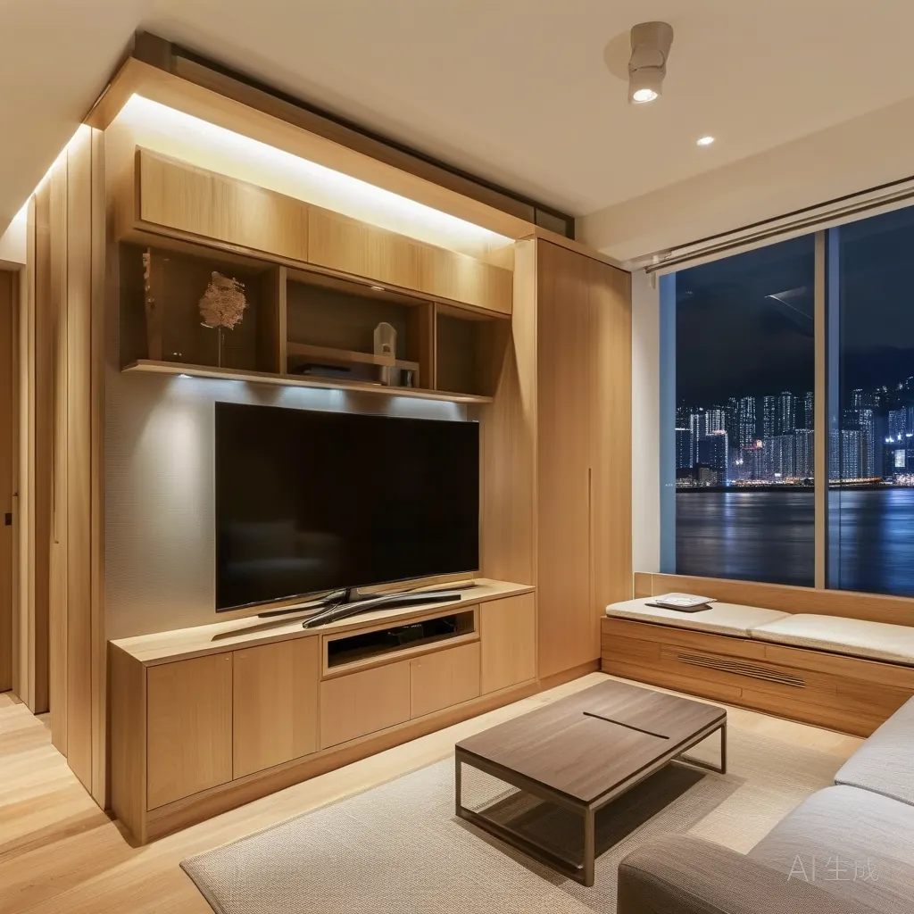

紅磡430呎舊樓大維修：祥叔教你睇驗樓監工分家後嘅報價單

📍 場景：紅磡｜主訪：祥叔（觀塘 30+ 年老行尊）｜記錄：張丹楓｜整理：雲蕾｜日期：2026 年 11 月 21 日｜WhatsApp 報價：852 5190 2328
序幕：一張通告，兩個總數
2026 年 11 月 20 日，政府向立法會提交修訂《建築物條例》的建議，因應去年 11 月 26 日大埔宏福苑大火之後的檢視，改革大型樓宇維修工程的規管。文件建議把大型樓宇維修獨立列為新的工程類別，涵蓋樓高四層或以上的樓宇；分拆驗樓和監工職能，切斷利益鏈；並規定向屋宇署提交法定文件的承建商，必須同為負責施工的承建商。罰則同時大幅提高：未取得許可而展開大型維修，最高罰款 200 萬元及監禁 2 年；准許或授權使用欠妥物料、違反訂明物料標準，或嚴重偏離訂明圖則及監工計劃書，最高罰款 300 萬元及監禁 3 年——現時同類小型工程罰則只是 50 萬元及監禁 18 個月。當局預計明年 1 月把條例草案提交立法會審議。
同一日傍晚，我同雲蕾去到紅磡一幢 1978 年落成的舊樓。大堂牆上貼住三張紙：一張外牆維修通告、一張法團會議紀錄、一張顧問公司報價摘要。何太住 430 呎兩房，是今屆法團委員，手裡拿著同一份報價摘要的影印本，紙邊已經翻到起毛。
「張生，你幫我睇睇。三份標書，價錢相差 180 萬。我唔識分邊份係真、邊份係假。」
呢個問題，我哋一個月總會聽到幾次。而答案通常唔在總數度。
第一幕：祥叔話，問題唔在價錢，在邊個簽名
祥叔在觀塘做咗三十幾年，棚架、外牆、天面防水都做過。佢約我哋在樓下茶餐廳坐，聽完何太嘅情況，第一句就問：「三份標書，驗樓同監工係唔係同一間公司做？」
「顧問公司話一條龍，驗樓、設計、監工、交文件，全部佢包。」
「咁就係問題所在。同一間公司驗完，話你幢樓要換外牆；跟住佢又幫你監工，睇住自己設計嘅工程有冇做足。你話，佢會唔會話自己做錯？」
「但佢係專業人士喎。」
「專業人士都要食飯。政府今次就係睇到呢一點，所以要分拆驗樓同監工。文件寫得好白：切斷利益鏈。仲有一句更關鍵——交文件畀屋宇署嘅承建商，必須同為負責施工嘅承建商，唔可以只分判、唔生產。」
我補充一句：呢個「只分判不生產」嘅漏洞，室內裝修一樣有。你以為簽咗一間公司，實際上落手嘅係另一批人；出事嘅時候，兩邊都話唔關自己事。業主手上只有一張寫住公司名嘅報價單，連邊個師傅入過屋都講唔出。
第二幕：物料標準，寫得越含糊越貴
政府今次同時建議修訂《建築物（建造）規例》，訂明所有建築工程中使用嘅物料——混凝土、防火門、棚架物料、臨時遮封窗戶物料——必須符合建築事務監督訂明的指定標準。另外建議把承建商備存工程監督紀錄的期限，由現時至少 12 個月延長至 6 年。
祥叔聽到「6 年」兩個字，笑咗一下：「以前做完就散，紙都冇張。6 年之後你間屋漏水，都仲搵得返邊一日起棚、邊一日拆棚、用咩料。」
「何太，你手上呢份報價，物料一欄寫咗咩？」
「寫『優質外牆塗料』、『符合標準棚架』。」
「等於冇寫。『優質』係形容詞，唔係標準。你要佢寫清楚：塗料牌子同型號、底漆幾度、面漆幾度、棚架用咩料、臨時封窗用幾厚嘅板、防火門有冇認證書。呢啲全部係日後追究嘅憑據。」
呢套邏輯，我哋做室內訂造嘅時候一模一樣。報價單寫「靚夾板」，同寫「E0 級 18mm 多層實木夾板」，價錢可以差兩成，五年後嘅分別更大。所以我哋嘅單一定列明：櫃身 18mm 多層實木夾板、背板留 10mm 通風隙做防潮封邊、鉸鏈用 304 不鏽鋼配氣壓桿、地台龍骨每 30 厘米一條、12mm 高密度板做層板。呢啲字唔好睇，但係你日後打開櫃門唔會聞到霉味嘅原因。

何太聽到呢度，做咗一個動作：拿筆在報價單邊位寫低「要型號、要證書、要相」。佢話，法團開會嗰陣，顧問講十句專業名詞，佢一句都記唔住；但呢三樣，佢記得。
第三幕：把大維修嘅尺，放返自己間屋
講完幢樓，何太帶我哋上樓睇佢自己個單位。430 呎，兩房，三十幾年樓齡，廚房櫃門已經甩咗一隻，主人房衣櫃頂積了一層灰。佢本來打算大維修完就順手做全屋訂造，預算一直未敢定。
「大維修已經要夾錢，我係唔係應該等外牆做完先裝修？」
「要等，但唔係白等。大維修做外牆同天面，會有震動、會有水；你入場裝修太早，新做嘅櫃同牆身接位好易受影響。我哋一般建議：外牆工程完成、棚架拆走之後，先做室內。中間呢兩三個月，剛好做圖、揀板材、定電掣位。」
我哋幫何太排嘅做法，其實同祥叔講嘅三樣一模一樣：
第一，問清楚邊個落手做。報價單要寫施工師傅係公司自己人，抑或判出去；如果判出去，判畀邊個、邊個負責收口。合約寫明，日後唔會出現「兩個都話唔關我事」。
第二，物料寫到型號。18mm 夾板、E0 級、304 不鏽鋼鉸鏈、防潮玻璃膠、龍骨間距 30 厘米。呢啲唔係賣點，係最低要求。
第三，留紀錄。每批板材到場影相、每個櫃背板封邊影相、每次收口影相，最後一齊交畀業主。大維修新例講 6 年，我哋自己嘅做法係永久留檔——反正而家影相唔用錢。

價錢我哋照慣例分項列出：電視櫃約 $11,000、廚櫃約 $13,000 至 $14,000、到頂衣櫃或趟門約 $9,500、高架地台約 $9,000、玻璃隔間約 $4,500、安裝約 $3,000 至 $5,100，套餐總額一般落在 $35,000 至 $38,000 之間。以上係故事報價，實際以度尺為準。
何太聽完，講咗一句好實在嘅話：「即係我唔係買櫃，我係買一張寫得清楚嘅紙。」我話，係。大維修係咁，室內裝修都係咁。
尾聲：寫得清楚，係最便宜嘅保險
兩個星期後，何太拎住修訂版標書返法團開會。佢做咗三件事：要求顧問書面講明驗樓同監工由兩個唔同團隊負責；要求承建商書面確認自己施工、唔會整段判出去；要求物料表逐項寫型號同標準。顧問起初話「以前都係咁做」，何太答：「以前冇人問，而家有人問。」
祥叔收工前講咗一句，我記低咗：「一幢樓嘅維修，睇三樣：邊個驗、邊個做、邊個簽。三樣都清清楚楚，價錢貴一成都值；三樣都含糊，平一成我都唔敢簽。」
今日呢份文件，講嘅係大型樓宇維修；但入到屋企，道理一樣。你間屋嘅櫃門會唔會對得齊、地台會唔會響、厨房櫃底會唔會出水痕，唔取決於報價單上嗰個總數，而取決於有冇人肯逐項寫清楚。裝修呢行，最貴嘅從來唔係材料，係含糊。

❓ 大維修新規管三問
Q1：政府 11 月 20 日提交嘅修例建議，同我間屋有咩關係？
建議把樓高四層或以上的大型樓宇維修獨立列為新工程類別，分拆驗樓與監工職能，並規定提交法定文件的承建商必須同為施工者；罰則提高至最高罰款 300 萬元及監禁 3 年，承建商工程監督紀錄由 12 個月延長至 6 年。當局預計明年 1 月把條例草案提交立法會審議，即係話你手上嘅標書，將來要答得更清楚。具體法定要求以屋宇署公布為準。
Q2：點知承建商係自己落手做，抑或整段判出去？
三樣可以問：一，要求書面列出施工團隊同負責人；二，要求列明邊部分會分判、判給邊個；三，在合約寫明收口責任由簽約公司承擔。開工後每次收貨，記低送貨單上嘅公司名同車牌。呢啲紀錄，日後就係你唯一講得清嘅憑據。
Q3：舊樓做完大維修，室內全屋訂造大概幾錢？
以 430 呎兩房為例，分項大約：電視櫃 $11,000、廚櫃 $13,000 至 $14,000、到頂衣櫃或趟門 $9,500、高架地台 $9,000、玻璃隔間 $4,500、安裝 $3,000 至 $5,100，套餐總額一般落在 $35,000 至 $38,000。以上係故事報價，實際以度尺為準。建議外牆工程完成、棚架拆走之後才入場，中間兩三個月做圖同揀料。
本文配圖均為 AI 場景示意圖，僅供場景參考，並非真實工地照片或業主影像。
相關文章：將軍澳 480 呎新樓幾時訂造傢俬｜上水天台加建被罰 12 萬｜北角 380 呎拆牆改開放式厨房
想知你個單位裝修要幾錢？
📱 一鍵 WhatsApp 張丹楓